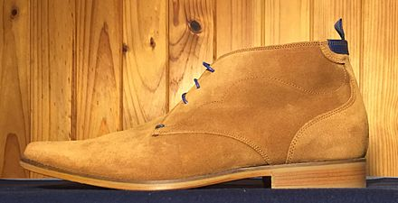
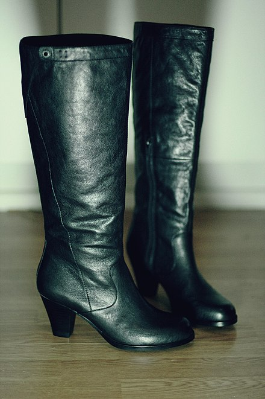
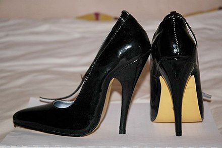
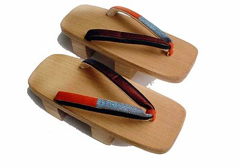

Boat Shoes
Boat shoes (also known as deck shoes) are typically canvas or leather with non-marking rubber soles designed for use on a boat. A siping pattern is cut into the soles to provide grip on a wet deck; the leather construction, along with the application of oil, is designed to repel water; and the stitching is highly durable. Boat shoes are traditionally worn without socks.
Boat Shoe - Wikipedia

Chelsea Boots
Chelsea boots are close-fitting, ankle-high boots with an elastic side panel. They often have a loop or tab of fabric on the back of the boot, enabling the boot to be pulled on. The boot dates back to the Victorian era, when it was worn by both men and women.
Chelsea boots and some of their variants were considered an iconic element of the 1960s in Britain, particularly the mod scene.
Chelsea Boots - Wikipedia

Chukka Boots
Chukka boots are ankle-high leather boots with suede or leather uppers, leather or rubber soles, and open lacing, with two or three pairs of eyelets. The name chukka possibly comes from the game of polo, where a chukka is a period of play.
Generally, "chukka boot" refers to a form of desert boots originally worn by British soldiers in the Western Desert Campaign of World War II.
Chukka Boots - Wikipedia

Fashion Boots
A fashion boot is a boot worn for reasons of style or fashion (rather than for utilitarian purposes – e.g. not hiking boots, riding boots, rain boots, etc.). The term is usually applied to women's boots. Fashion boots come in a wide variety of styles, from ankle to thigh-length, and are used for casual, formal, and business attire. Although boots were a popular style of women's footwear in the 19th century, they were not recognized as a high fashion item until the 1960s. They became widely popular in the 1970s and have remained a staple of women's winter wardrobes since then.
Fashion Boots - Wikipedia

High Heeled Shoes
High-heeled shoes, also known as high heels or simply heels, are a type of shoe with a raised heel. This design raises the heel of the wearer's foot significantly higher off the ground than the wearer's toes. High heels can cause the wearer's legs to appear longer, make the wearer appear taller, and accentuate muscle tone in the wearer's legs.
There are many different types of heels, varying in colors, materials, style, and origin. Heeled shoes have had significant cultural and fashionable meanings attached to them over the past 1,000 years, especially regarding gender in the West. In early 17th century Europe, high heels were a sign of masculinity and high social status, and at the end of the century, the trend had spread to women's fashion as well. By the 18th century, high-heeled shoes had bifurcated along gender lines, with men's heels being either riding or tall leather boots, and women's becoming more narrow and pointy (similar to modern heels). By the 20th century, narrow high heels represented femininity; however, a thick high heel was still sometimes socially acceptable for men. Until the 1950s, shoe heels were typically made of wood, but in recent years they are made of a variety of materials including leather, suede, and plastic.
Wearing high heels is associated with health risks such as a greater risk of falls, musculoskeletal pain, the development of foot deformities and varicose veins.
High Heeled Shoes - Wikipedia

Geta
Geta (下駄) (pl. geta) are traditional Japanese footwear resembling flip-flops. A kind of sandal, geta have a flat wooden base elevated with up to three (though commonly two) "teeth", held on the foot with a fabric thong, which keeps the foot raised above the ground.
Geta Shoes - Wikipedia